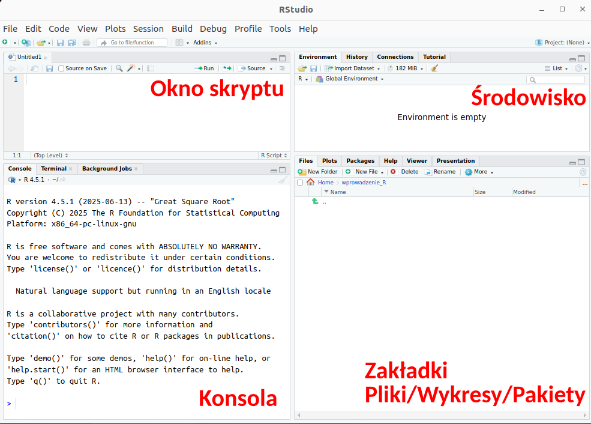
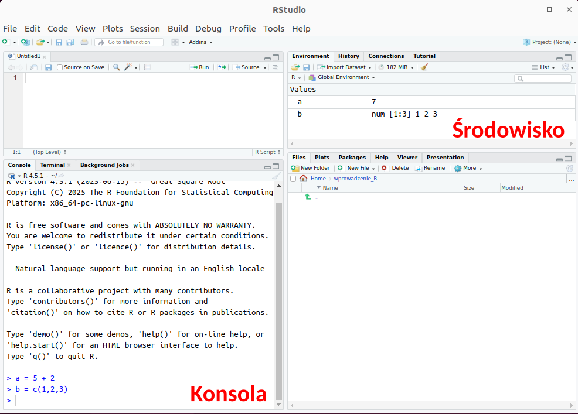
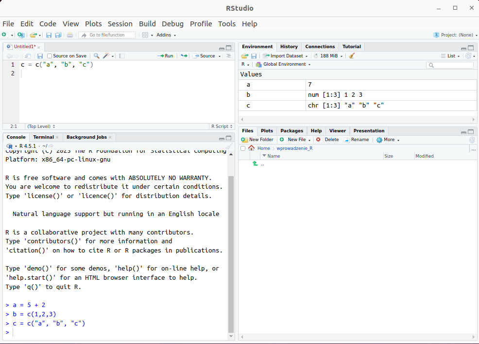
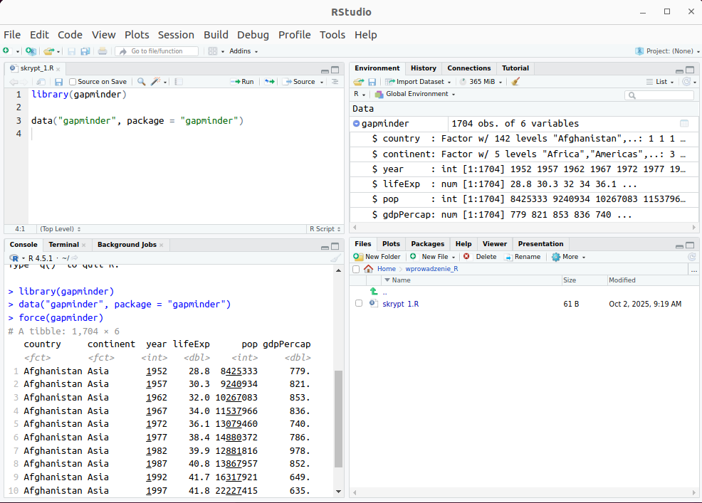
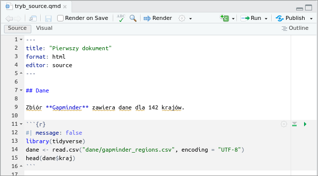
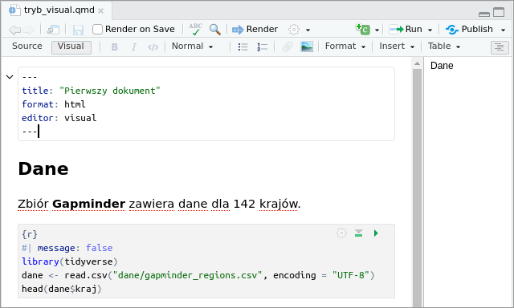
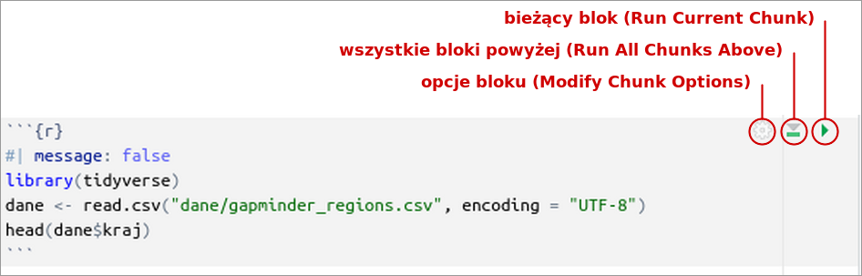
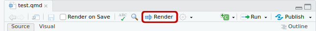
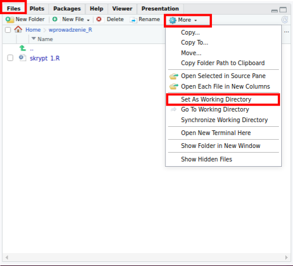

# dodawanie: polecenie wpisane w konsoli i jego wynik
5 + 2[1] 7Rozdział opisuje okno programu RStudio oraz zasady pracy z plikami z kodem: wykonywanie poleceń w konsoli, uruchamianie bloków kodu w dokumencie Quarto (.qmd), tworzenie dokumentu przyciskiem Render i zapisywanie pracy.
Okno RStudio jest podzielone na cztery części (Rycina 2.1):
.qmd, Packages — zainstalowane pakiety, Help — dokumentacja funkcji, Viewer — podgląd dokumentów HTML.
Układ i rozmiar części okna można zmieniać, przeciągając ich granice; przyciski w prawym górnym rogu każdej części minimalizują ją albo maksymalizują.
Zakładka Packages zawiera listę pakietów zainstalowanych na komputerze: nazwę, opis i numer wersji każdego pakietu (Rycina 1.6). Aby sprawdzić, czy pakiet jest zainstalowany, należy wpisać jego nazwę w polu wyszukiwania nad listą: pakiet zainstalowany pojawia się na liście. Zaznaczone pole obok nazwy oznacza pakiet wczytany w bieżącej sesji pracy. Przycisk Install instaluje nowy pakiet (Sekcja 1.5), a przycisk Update aktualizuje pakiety zainstalowane.
Po uruchomieniu RStudio w konsoli pojawia się informacja o zainstalowanej wersji R. Polecenie wpisuje się po znaku zachęty > i zatwierdza klawiszem Enter. Wynik pojawia się bezpośrednio pod poleceniem:
# dodawanie: polecenie wpisane w konsoli i jego wynik
5 + 2[1] 7Znak [1] przed wynikiem oznacza numer pierwszego elementu w wierszu wyniku. Strzałka w górę (↑) przywołuje poprzednie polecenia, które można zmienić i wykonać ponownie. Dopóki R wykonuje polecenie, w prawym górnym rogu konsoli widoczny jest czerwony znak stop; kliknięcie go przerywa wykonywanie polecenia. Znak + na początku wiersza zamiast > oznacza, że polecenie jest niekompletne, np. brakuje nawiasu zamykającego; klawisz Esc przerywa wpisywanie takiego polecenia.
Na rycinie 2.2 w konsoli wpisano dwa polecenia:
a = 5 + 2 — przypisanie wyniku dodawania 5 + 2 do obiektu a. Po wykonaniu polecenia obiekt a o wartości 7 pojawia się w zakładce Environment;b = c(1,2,3) — utworzenie obiektu b zawierającego wartości 1, 2 i 3. Także ten obiekt pojawia się w zakładce Environment.Przypisanie można zapisać znakiem = albo <-; zależność między tymi zapisami wyjaśnia Sekcja 3.2.

Konsola służy do pojedynczych poleceń, np. instalacji pakietu (Sekcja 1.5) albo sprawdzenia wartości. Polecenia wpisane w konsoli nie są zapisywane w pliku, dlatego kod analizy umieszcza się w pliku z kodem.
.R i dokument .qmdRStudio obsługuje dwa rodzaje plików z kodem R:
Skrypt .R |
Dokument Quarto .qmd |
|
|---|---|---|
| zawartość | wyłącznie kod R i komentarze | tekst oraz bloki kodu R |
| uruchamianie | przycisk Run (bieżący wiersz) albo Source (cały plik) | uruchamianie bloków albo przycisk Render (cały dokument) |
| wynik | obiekty, wykresy i komunikaty w RStudio | dokument (np. HTML) zawierający tekst, kod i wyniki |
| utworzenie | File → New File → R Script | File → New File → Quarto Document… |
W skrypcie cały kod znajduje się w dokumentach .qmd: łączą one opis analizy, kod i wyniki w jednym pliku, z którego powstaje raport. Główne zasady pracy z tym dokumentem przedstawia Sekcja 2.5, a jego budowę opisuje Rozdział 7.
Kod analizy zapisuje się w pliku, w oknie skryptu, ponieważ plik można zapisać i wykorzystać ponownie. Podstawowe zasady pracy w oknie skryptu:
Na rycinie 2.3 w oknie skryptu wpisano i wykonano polecenie c = c("a", "b", "c"). Obiekt c pojawił się w zakładce Environment, a polecenie — w konsoli. Plik nie został jeszcze zapisany: nazwa jego karty (Untitled1*) jest wyświetlana na czerwono i zakończona gwiazdką (*). W ten sposób RStudio oznacza każdy plik zawierający niezapisane zmiany.

Zmiany zapisuje się poleceniem File → Save albo skrótem Ctrl+S. Istniejący plik otwiera się poleceniem File → Open File… albo kliknięciem nazwy pliku w zakładce Files.
Na rycinie 2.4 przedstawiono zapisany skrypt skrypt_1.R, utworzony poleceniem File → New File → R Script. Skrypt zawiera dwa polecenia:
library(gapminder) — wczytanie pakietu gapminder;data("gapminder", package = "gapminder") — wczytanie danych z tego pakietu.Wczytana tabela znajduje się w zakładce Environment, a kliknięcie strzałki obok jej nazwy wyświetla listę kolumn. Pakiet gapminder występuje wyłącznie w tym przykładzie; pozostałe rozdziały wczytują dane z pliku CSV (Sekcja 3.3).

.qmdDokument Quarto łączy w jednym pliku kod, tekst i wyniki. Główne zasady pracy z dokumentem:
---, znajduje się nagłówek YAML z ustawieniami dokumentu, np. tytułem i formatem;Najprostszy dokument zawiera nagłówek, tekst i jeden blok kodu:
---
title: "Pierwszy dokument"
format: html
---
Poniższy blok kodu oblicza sumę dwóch liczb.
```{r}
5 + 2
```Kolejne sekcje opisują te zasady w RStudio. Pełny opis dokumentu, w tym opcje nagłówka, składnię tekstu, ryciny, tabele i odsyłacze, zawiera Rozdział 7.
Nad dokumentem .qmd znajdują się przyciski Source i Visual. W trybie Source plik jest wyświetlany jako tekst, w tym znaki formatowania i nagłówek YAML. W trybie Visual tekst wyświetlany jest z formatowaniem, zbliżonym do wyglądu gotowego dokumentu (Rycina 2.5, Rycina 2.6). Oba tryby przedstawiają ten sam plik. Kod w skrypcie jest przedstawiony w postaci, którą widać w trybie Source.

.qmd w trybie Source: nagłówek YAML, znaki formatowania (##, **) i blok kodu widoczne jako tekst.

Kod R umieszcza się w blokach kodu (ang. chunks). Blok zaczyna się wierszem ```{r}, a kończy wierszem ```. Wiersze rozpoczynające się od #| na początku bloku są opcjami bloku, np. #| message: false ukrywa komunikaty w gotowym dokumencie. Tekst poprzedzony znakiem # to komentarz — R pomija go przy wykonywaniu kodu.
Nowy blok wstawia się skrótem Ctrl+Alt+I albo przyciskiem z zielonym symbolem +C nad dokumentem.
| Co uruchomić | Sposób |
|---|---|
| bieżący wiersz albo zaznaczony fragment | Ctrl+Enter albo przycisk Run |
| cały blok | zielona strzałka (Run Current Chunk) w prawym górnym rogu bloku albo Ctrl+Shift+Enter |
| wszystkie bloki powyżej bieżącego | szara strzałka z zieloną linią (Run All Chunks Above) w prawym górnym rogu bloku |
| wszystkie bloki dokumentu | Run → Run All albo Ctrl+Alt+R |
Przyciski w prawym górnym rogu bloku przedstawia Rycina 2.7. Zielona strzałka uruchamia bieżący blok, a szara strzałka z zieloną linią — wszystkie bloki powyżej bieżącego. Przycisk z symbolem koła zębatego otwiera okno opcji bloku.

.qmd i przyciski w jego prawym górnym rogu.
Wynik bloku pojawia się bezpośrednio pod blokiem, a utworzone obiekty — w zakładce Environment.
Bloki uruchamia się po kolei, od początku pliku. Kolejne bloki korzystają z obiektów utworzonych we wcześniejszych blokach, np. z tabeli wczytanej na początku pliku. Jeżeli blok zostanie uruchomiony przed blokiem, który tworzy potrzebny obiekt, R zwraca błąd object '...' not found.
Polecenie Session → Restart R rozpoczyna nową sesję R: usuwa wszystkie obiekty z pamięci. Po ponownym uruchomieniu bloków od początku pliku obiekty zostają odtworzone.
Przycisk Render (Rycina 2.8) albo skrót Ctrl+Shift+K wykonuje cały dokument od początku, w nowej sesji R, i tworzy z niego dokument HTML. Plik HTML powstaje w tym samym folderze co plik .qmd, a jego podgląd otwiera się w zakładce Viewer albo w przeglądarce internetowej. Render kończy się błędem, jeżeli którykolwiek blok kodu zwraca błąd — komunikat wskazuje blok i wiersz pliku.

.qmd (zaznaczony czerwoną ramką).
Katalog roboczy to folder, względem którego R odczytuje ścieżki względne, np. "dane/gapminder_regions.csv". W tym folderze znajdują się zwykle dane i plik z kodem.
Dokument .qmd. Katalogiem roboczym jest folder, w którym zapisano plik .qmd — zarówno przy uruchamianiu bloków, jak i przy tworzeniu dokumentu przyciskiem Render. Dlatego folder dane/ powinien znajdować się obok pliku .qmd, a ustawianie katalogu roboczego nie jest potrzebne.
Konsola i skrypt .R. Katalog roboczy konsoli wyświetla się w jej nagłówku, a podaje go także polecenie getwd(). Przed rozpoczęciem pracy w konsoli albo ze skryptem .R należy ustawić katalog roboczy (Rycina 2.9):
Katalog roboczy ustawia także polecenie setwd("C:/kurs/moje_dane") wpisane w konsoli; w ścieżce stosuje się znak /. Polecenia setwd() nie umieszcza się w dokumencie .qmd, ponieważ podana w nim ścieżka nie istnieje na innym komputerze.

Dokumentację funkcji wyświetla się w zakładce Help poleceniem wpisanym w konsoli: znak zapytania i nazwa funkcji, np. ?summary. Dokumentacja zawiera sekcje: Description (co robi funkcja), Usage (sposób wywołania), Arguments (opis argumentów), Value (co zwraca funkcja) i Examples (przykłady).
Przed zamknięciem RStudio należy zapisać zmienione pliki (Ctrl+S). Przy zamykaniu programu RStudio może wyświetlić pytanie Save workspace image to ~/.RData? o zapisanie obiektów z bieżącej sesji. Przy pracy z dokumentami .qmd zapis nie jest potrzebny: obiekty odtwarza się, uruchamiając plik od początku. Należy wybrać Don’t Save.